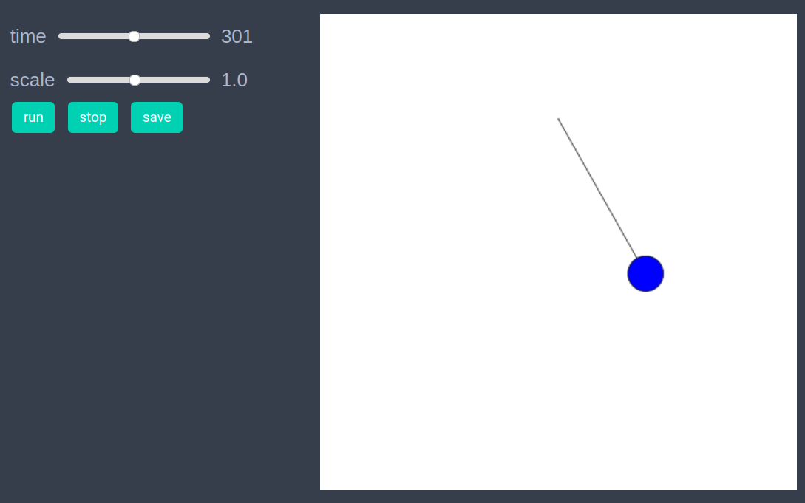
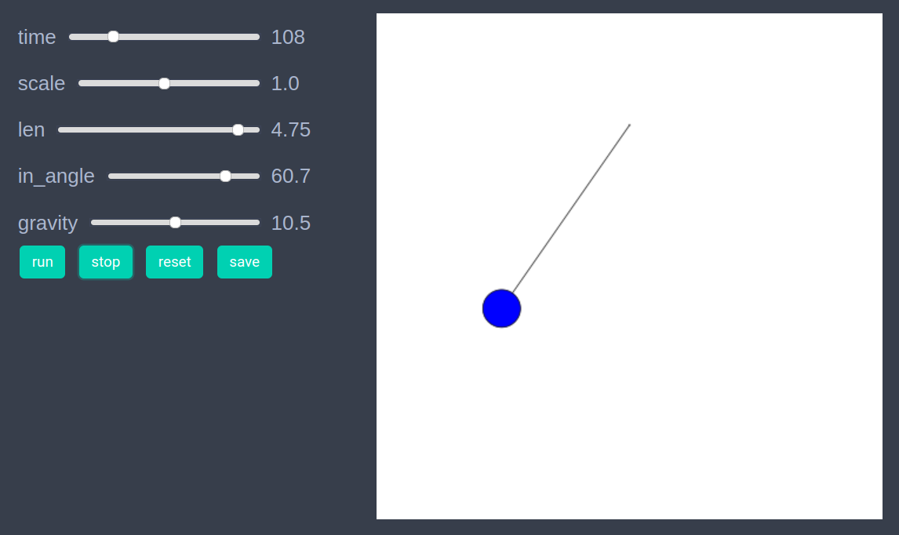

Simple pendulum
We will implement simulation of a simple pendulum using using graph space model.
using EasyABMStep 1: Create Model
In this model we will work solely with the graph and won't need agents. We initially create a graph with two nodes, and then create our model with parameters gravity, dt, len and in_angle as follows.
graph = graph_from_dict(Dict(
"num_nodes"=>2,
"edges"=>[(1,2)]
))
model = create_graph_model(gr, gravity = 9.0, dt=0.1, len= 4.0, in_angle=30.0)Step 2: Initialise the model
In this step set initial values of position, angle and angular velocity. The nodes in a graph can have values of x and y coordinates in range 0 to 10. We set the position of first (fixed) node to be Vect(5, 8) and that of the second node (which represents the hanging mass) at a distance of model.parameters.len and angle (in degrees) of model.parameters.in_angle below the fixed node.
function initialiser!(model)
len = model.parameters.len
theta = model.parameters.in_angle*pi/180
pos1 = Vect(5.0, 8.0)
pos2 = pos1 + Vect(len*sin(theta), -len*cos(theta))
model.graph.nodesprops[1].pos = pos1
model.graph.nodesprops[1].size = 0.1 # make the peg node small
model.graph.nodesprops[2].pos = pos2
model.graph.nodesprops[2].ang_vel = 0.0
model.graph.nodesprops[2].angle = theta
model.graph.nodesprops[2].color = cl"blue"
end
init_model!(model, initialiser= initialiser!,
props_to_record = Dict("nodes"=>Set([:pos]))) Step 3: Defining the step_rule! and running the model
In this step we implement the step logic of the simple pendulum and run the model for 500 steps.
function step_rule!(model)
len = model.parameters.len
dt = model.parameters.dt
gravity = model.parameters.gravity
peg = model.graph.nodesprops[1].pos
model.graph.nodesprops[2].angle += model.graph.nodesprops[2].ang_vel*dt
theta = model.graph.nodesprops[2].angle
model.graph.nodesprops[2].ang_vel += -gravity*sin(theta)*dt/len
model.graph.nodesprops[2].pos = peg + Vect(len*sin(theta), -len*cos(theta))
endrun_model!(model, steps = 500, step_rule = step_rule!)Step 4: Visualisation
If one wants to see the animation of the model run, it can be done as
animate_sim(model)
After defining the step_rule! function we can also choose to create an interactive application (which currently works in Jupyter with WebIO installation) as
create_interactive_app(model, initialiser= initialiser!,
props_to_record = Dict("nodes"=>Set([:pos])),
step_rule= step_rule!,
model_controls=[(:len, "slider", 2.0:0.05:5.0),
(:in_angle, "slider", 5.0:0.1:75.0),
(:gravity, "slider", 1.0:0.5:20.0)],
frames=500) 
Step 4: Fetch Data
We can fetch the recorded data of the moving node (which is node 2 in our case) as follows
df = get_node_data(2, model)```julia